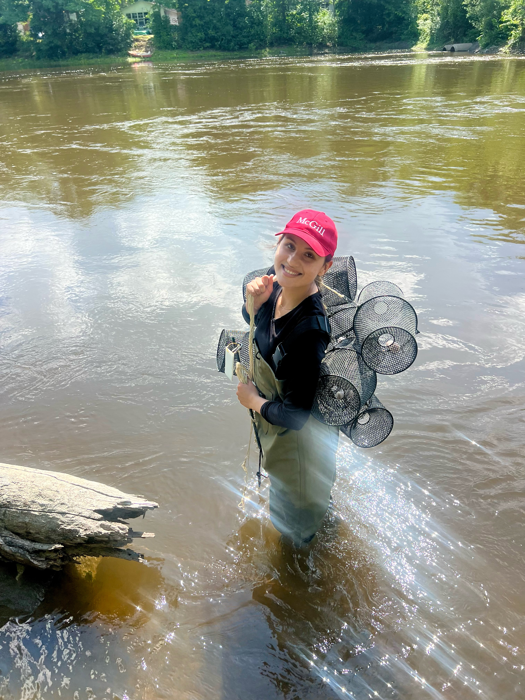
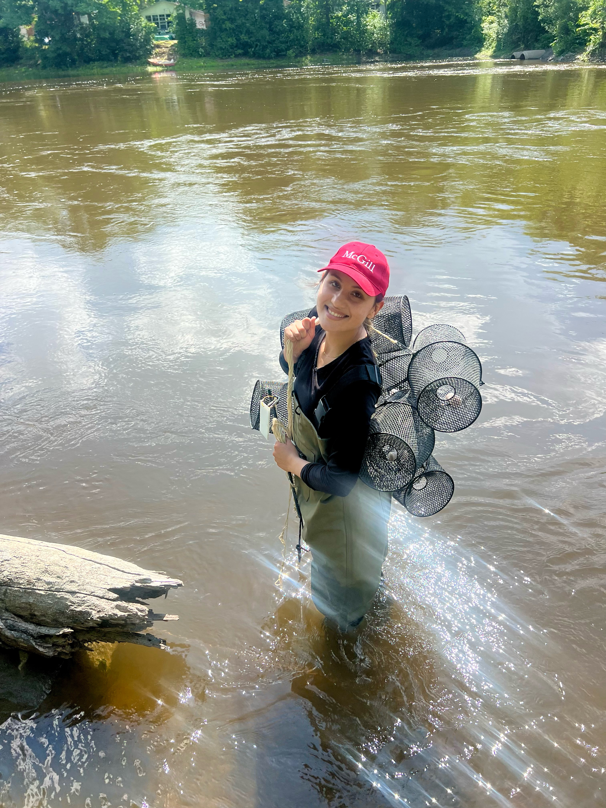
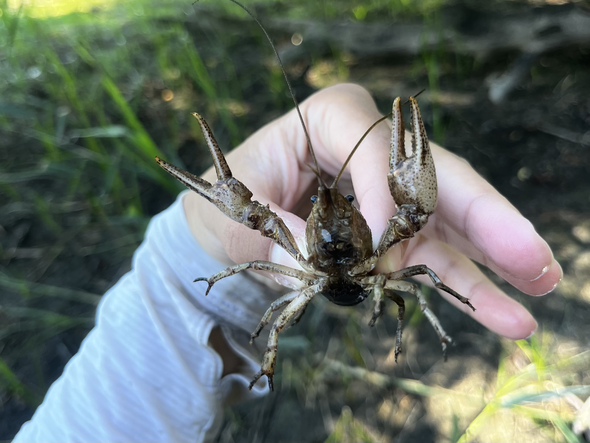
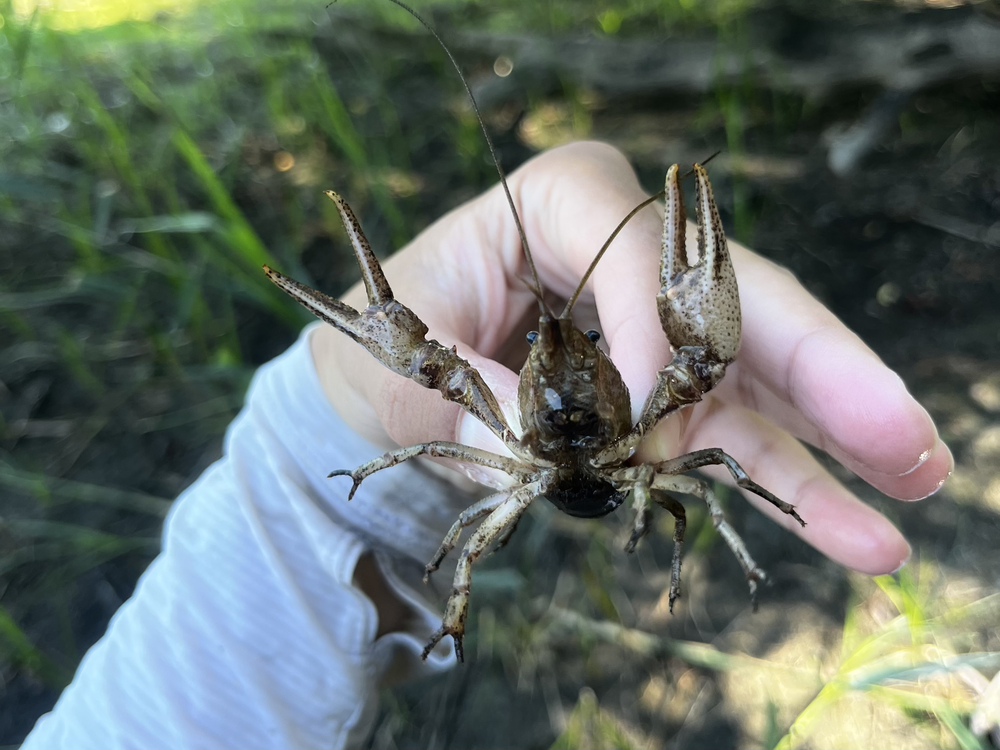
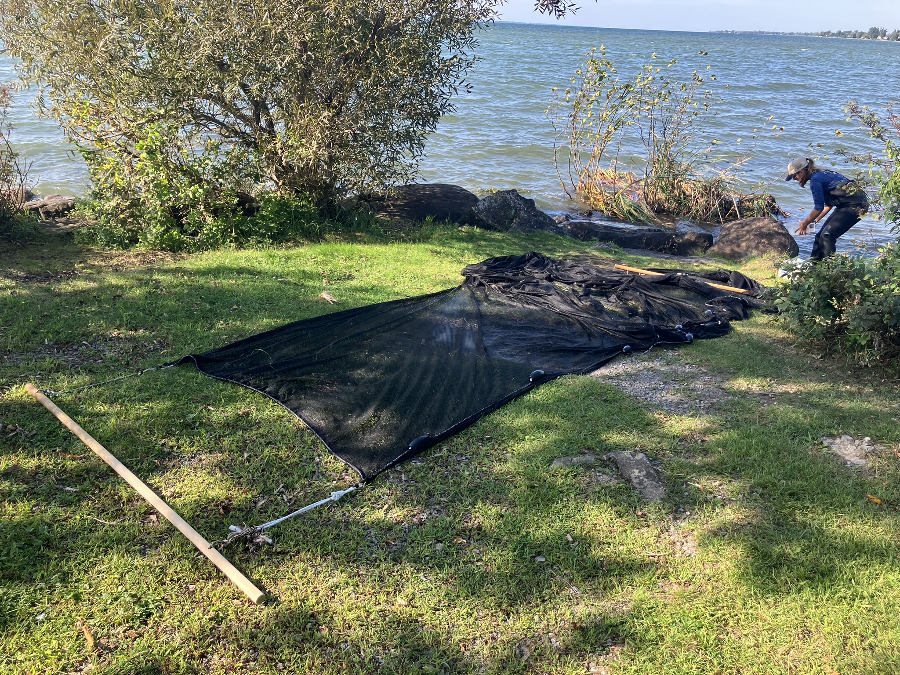
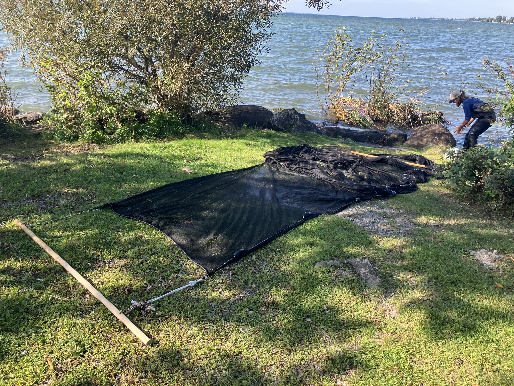

Gallery
2025 Summer Field Work
First PhD field season under my belt! We successfuly sampled crayfishes at 40 sites along the St. Lawrence river and Ottawa river upstream, downstream, and around the island of Montreal. Take a look at some of the season’s highlights below!

 

 


2024 Dean’s reception to celebrate Fellowship Award recipients
I attended the 2024 Dean of Graduate and Postdoctoral Studies’ reception to celebrate Fellowship Award recipients. The evening was filled with delicious food, and networking with fellow Tomlinson Scholars as well as Banting Postdoctoral Fellows, Vanier Canada Graduate Scholars, and Pierre Elliott Trudeau Foundation Scholars.

Left: Group photo of the 2023 & 2024 Tomlinson Scholars. Right: An action shot of me discussing my PhD topic with old and new friends. Photo credit to Owen Egan and Joni Dufour.
Summer 2024 Field Work
I only caught the tail end of field work this summer since I started my PhD program in September but I was lucky enough to help my colleague Ty with his field work for a couple of days.


 

Ty, Erin, Veronica, Alex, and I used a box seine to sample for invasive Round Gobbies in lakes on the Ontario side of the Quebec-Ontario border. In the top left photo you can see two gobbies in the corner of the bucket. In the bottom right you can see a dorsal view of a round gobie and a tube-nosed gobie, side-by side, in a viewing window.Tubenose gobie are an imerging invasive fish that has only recently been confimed in Ontario and parts of Quebec.
MSc Field & Lab Work
During my MSc work at the University of Alberta, I had the privledge of trapping and efishing in some of the most beautiful places in Alberta, from the Rockies to the Prairies. Some fo the best photos of the work I conducted between 2019 and 2021 are shown below.


![From top left to bottom right: Overlooking the headwaters of the Siffleur River before efishing (2020). Smiling after a successful field day in a beatiful prairie creek on the Eastern North Saskatchewan River basin (2019). A happy scientist holding the first invasive Northern Crayfish of the field season (2020). Trecking my gear 2 km back to the trailhead parking lot through Kootenay National Park after a successful day of efishing (2020). Dissecting invasive Northern Crayfish for stabe Isotope Analysis (2021). Finishing up field notes with a view (2019). Efishing the Ram River (2019).](WebsiteImages/notetaking.jpg)
![From top left to bottom right: Overlooking the headwaters of the Siffleur River before efishing (2020). Smiling after a successful field day in a beatiful prairie creek on the Eastern North Saskatchewan River basin (2019). A happy scientist holding the first invasive Northern Crayfish of the field season (2020). Trecking my gear 2 km back to the trailhead parking lot through Kootenay National Park after a successful day of efishing (2020). Dissecting invasive Northern Crayfish for stabe Isotope Analysis (2021). Finishing up field notes with a view (2019). Efishing the Ram River (2019).](WebsiteImages/teamefishnew1.jpg)
From top left to bottom right: Overlooking the headwaters of the Siffleur River before efishing (2020). Smiling after a successful field day in a beatiful prairie creek on the Eastern North Saskatchewan River basin (2019). A happy scientist holding the first invasive Northern Crayfish of the field season (2020). Trecking my gear 2 km back to the trailhead parking lot through Kootenay National Park after a successful day of efishing (2020). Dissecting invasive Northern Crayfish for stabe Isotope Analysis (2021). Finishing up field notes with a view (2019). Efishing the Ram River (2019).